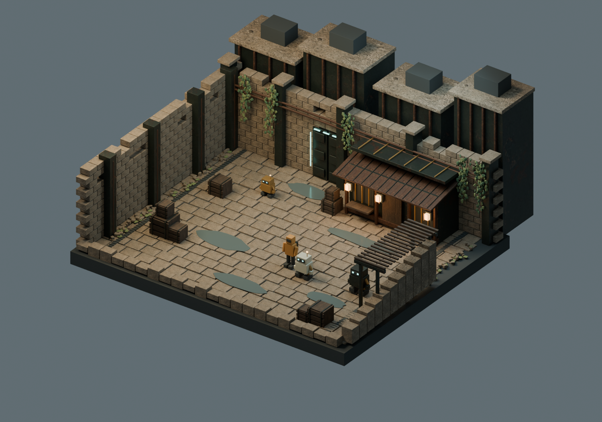
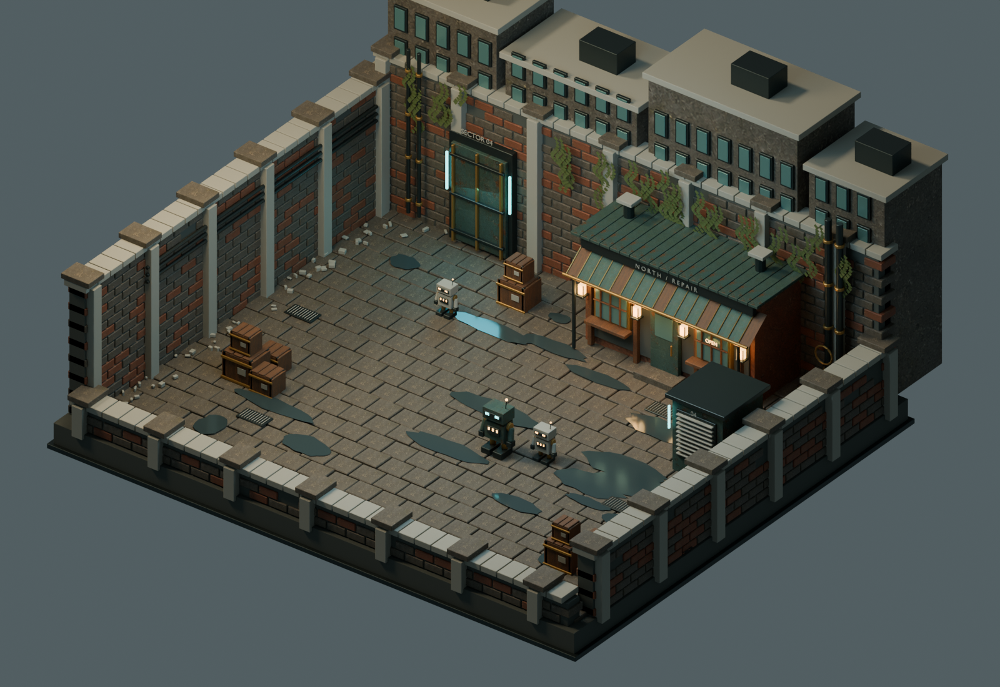
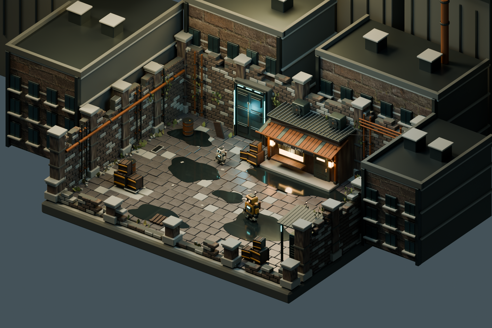
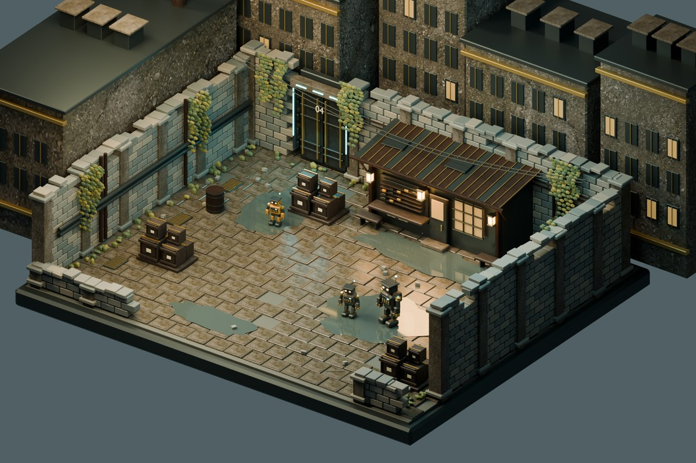

LOWER DISTRICT / 04 — AFTER THE RAIN
One courtyard.
Four interpretations.
같은 장면, 같은 제작 요청. 네 가지 추론 강도로 만든 Rain Court를 살펴보세요.
Blender 모델링 · 정리된 UV · ImageGen 텍스처 · 범용 3D 파일
STUDY 0117:42

Medium
↗비가 그친 안뜰을 탐색하기
STUDY 0217:42

High
↗비가 그친 안뜰을 탐색하기
STUDY 0317:42

XHigh
↗비가 그친 안뜰을 탐색하기
STUDY 0417:42

Ultra
↗비가 그친 안뜰을 탐색하기
각 장면에서 카메라를 움직이고 모델 원본을 다운로드할 수 있습니다.